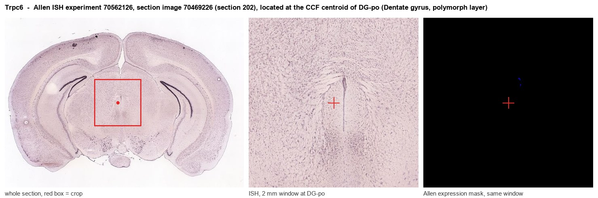
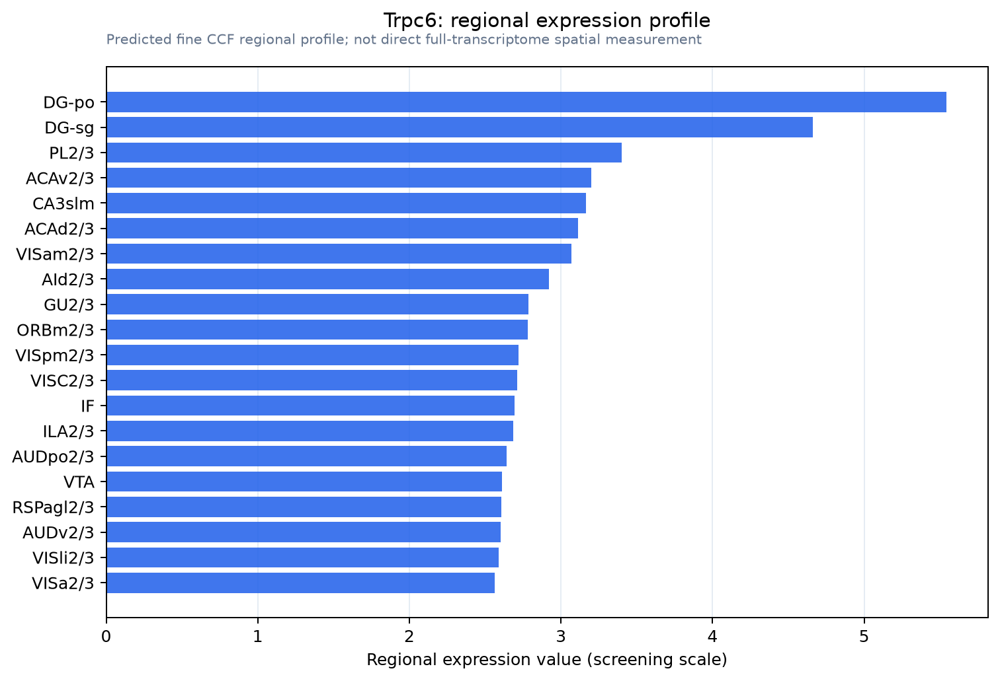

Trpc6
Short transient receptor potential channel 6 (TrpC6) (Calcium entry channel) (Transient receptor protein 6) (TRP-6)
Spatial tier: REGION_BIASED · Class: ION_CHANNEL · Top region: DG-po (Dentate gyrus, polymorph layer) · Positive regions: 45/554
Function in DG-po: evidence, prediction, innovation
- Gene function
- TRPC6 is a diacylglycerol-gated, Ca2+-permeable non-selective cation channel of the canonical TRP family. It opens when Gq-coupled receptors drive phospholipase C to make DAG, depolarising the neuron and admitting Ca2+ that engages CaMKIV/CREB, Ras-MEK-ERK and PI3K-Akt signalling to promote spine formation and excitability. It is the target of hyperforin, the antidepressant constituent of St John's wort.
- Region function
- The dentate hilus supplies feedback excitation and disynaptic inhibition to granule cells, setting dentate excitability, pattern separation and seizure threshold.
- Published in this region
- direct Nagy et al. 2013 used a knockout-validated antibody and immunogold electron microscopy to localise TRPC6 to dentate granule cell dendrites and axons and to hilar interneuron dendrites. Kim et al. 2015 found TRPC6 downregulated in chronically epileptic rat DG, with knockdown raising seizure susceptibility and granule-cell necrosis. Xie et al. 2021 showed AAV-shRNA knockdown in mouse DG cut spine density and impaired spatial, working and social memory; El Hamdaoui et al. 2022 found Trpc6-null mice have reduced granule cell excitability and anxious-depressive phenotypes.
- Predicted function
- Prediction: within DG-po, TRPC6 on hilar interneuron dendrites converts mGluR1a drive from granule cell collaterals into sustained Ca2+ influx and feedback inhibition. Interneuron-selective deletion should weaken that inhibition, raising dentate gain and seizure susceptibility, whereas locally delivered hyperforin or its analogue Hyp13 should strengthen hilar inhibition with anxiolytic, anticonvulsant effect.
- Innovation
- ★★☆☆☆ 2/5 TRPC6 is well studied in dentate granule cells, but its role in hilar interneurons is untested.
- Tools
- Trpc6 knockout and floxed mice; knockout-validated anti-TRPC6 antibody (Nagy 2013); agonists hyperforin and Hyp13; inhibitors SAR7334 and larixyl acetate; validated AAV-shRNA (Xie 2021).
- References
Direct evidence located at the region

Allen ISH experiment 70562126, section image 70469226 (section 202): the section that contains the CCF centroid of Dentate gyrus, polymorph layer according to the Allen image-to-atlas alignment (reference_to_image), with a 2 mm window around that point. Left: whole section, red box = window. Middle: ISH signal. Right: Allen's expression-mask view of the same window. open this image in the Allen viewer
Direct spatial evidence

Regional expression figure

Predicted WMB × fine-CCF profile; not direct full-transcriptome spatial measurement.
Spatial profile
Evidence and specificity
- Evidence status
- PREDICTED_FINE
- Direct sources
- None; predicted localization only
- Exclusive threshold
- 12 positive regions out of 554
- Spatial specificity
- 0.280
- Top-region fraction
- 0.044
- Filter status
- PASS
Interpretation limits
- Cell-type-to-region projection is imputed expression, not direct spatial measurement.
- Adult reference atlases do not establish stability across age, sex, strain, state, or disease.
- Transcript abundance does not guarantee protein abundance or genetic-tool performance.